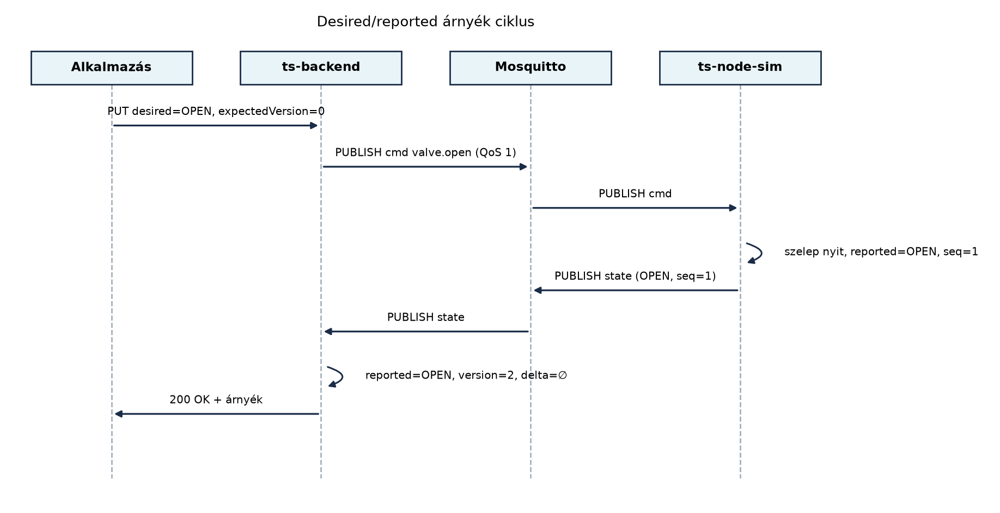

Az Parancsok és konfiguráció lefelé: kézbesítés,
nyugtázás, időkorlát alfejezetben a ts-backend
parancsot publikált a cmd topicra, az eszköz pedig a
cmd/result topicon nyugtázott. A parancsút azonban
önmagában nem ad választ egy alapvető kérdésre: mit tegyen a felhasználó
vagy a szabálymotor, amíg az eszköz nem nyugtáz? A TerraSense-ben
például a kezelő beállítja, hogy a gh1/n001 csomópont
öntözőszelepe legyen nyitva. A parancs elmegy MQTT-n, de az eszköz éppen
alszik vagy rossz a rádiós kapcsolat. A cmd/result csak
később, esetleg sosem érkezik meg. Az eszközárnyék (device shadow) ezt a
problémát úgy oldja meg, hogy a backendben külön tárolja a
kívánt (desired) és az eszköz által
jelentett (reported) állapotot, a kettő eltéréséből
pedig deltát számít. Így a felhasználó azonnal látja,
hogy a kívánt állapot még nem teljesült, és az eszköz következő
felébredésekor a delta újra kézbesíthető.
Definíció. Az eszközárnyék (device
shadow) az IoT-eszköz backendben tárolt, szerializálható,
üzemeltetési nézetű reprezentációja, amely legalább a kívánt állapotot
(desired), az eszköz által jelentett tényleges állapotot
(reported) és ezek eltérését (delta)
tartalmazza. A desired a rendszer vagy a felhasználó
által célként megadott állapot, a reported az eszköz
legutolsó állapotüzenetéből nyert tényleges állapot. A
delta a desired és a reported rendezett
összehasonlítása; ha a kettő nem egyezik, a delta a kívánt értéket
hordozza, és azt jelzi, hogy van még végrehajtandó munka.
A digitális iker ennél több. Definíció. A digitális iker az eszköz teljes, sokszor strukturált, térbeli, fizikai vagy viselkedési modellje, amely szimulációra, előrejelzésre és elemzésre is alkalmas. Az eszközárnyék gyakorlatorientált, kis erőforrású üzemeltetési nézet; a digitális iker a tervezési, üzemeltetési és elemzési rétegek közös modellje. A TerraSense-ben az eszközárnyék a szelep desired/reported állapotát tárolja, a digitális iker pedig például az üvegház hőmodelljét, az öntözés hatását és a várható termést is magában foglalná.
A működést a következő üzenetsor mutatja:

Az árnyék három forrásból frissül. A desired
frissítése jellemzően REST API-n, riasztási szabályból vagy
parancsrétegből érkezik, és a cmd topicra publikált
parancsot váltja ki. A reported frissítése az eszköz
state topicra küldött üzenetéből származik. A delta nem
önálló üzenet, hanem a tárolt desired és reported összehasonlításából
számított, származtatott mező.
Verziószám és konfliktus. Mivel a desired állapotot
több alkalmazás is módosíthatja, az árnyék minden íráskor növekvő
version értéket kap. A TerraSense laborban
optimista konkurenciavezérlést alkalmazunk: az ügyfél a
PUT hívásban elküldi az általa ismert
expectedVersion értéket. Ha az eltér a tárolt verziótól, a
backend 409 Conflict választ ad, és az ügyfélnek újra kell
olvasnia az árnyékot. Ez megakadályozza, hogy egy elavult kliens
felülírjon egy időközben beérkezett, újabb desired állapotot.
Retained üzenet vs. backend-tárolt árnyék. Az MQTT
retained üzenet a brokerben tárolja az utolsó, adott topicra publikált
üzenetet, és az újonnan feliratkozó kliensek azonnal megkapják. Ez
egyszerű megoldás az utolsó state vagy akár
desired érték megőrzésére. A backend-tárolt árnyék azonban
többet tud: együtt tárolja a desired és reported párokat, verziószámot,
időbélyeget, delta számítást, REST API-t és tranzakcionális frissítést.
A retained üzenetnek nincs delta fogalma és nem tudja kezelni a
konkurens írásokat.
| Szempont | Retained üzenet | Backend-tárolt árnyék |
|---|---|---|
| Desired és reported együtt | csak üzenetenként | egy objektumban |
| Delta számítás | nincs | van |
| Verzió és konfliktuskezelés | nincs | van |
| REST/API elérés | nincs | van |
| Broker-függőség | erős | gyenge |
| Tárolt adatmennyiség | egy üzenet | rendezett rekord |
A döntés TerraSense-ben egyértelmű: mivel a desired állapotot REST
API-n akarjuk kezelni, és a delta alapján újra kell kézbesíteni a
parancsot, a backend-tárolt árnyékot választjuk. A retained
state üzenetet továbbra is használhatjuk a frissen
csatlakozó eszközök gyors felzárkóztatására, de az árnyék igazságforrása
a backend tartós tárolója. A laborban ez memóriabeli
ConcurrentHashMap, éles rendszerben adatbázis; a
laborhatárt a fejezet külön jelzi.
A digitális iker (digital twin) fogalma nem egyetlen technológia, hanem architekturális minta. A TerraSense üvegházában a digitális iker tartalmazhatná a csomópontok fizikai elhelyezkedését, a szenzorok kalibrációs paramétereit, a szelepek hidraulikai jellemzőit, valamint a szimulációs modellt, amely például a hőmérséklet és a talajnedvesség alakulását előrejelzi. Az eszközárnyék ennek csak egyetlen, üzemeltetés közeli szelete.
Az Eclipse Ditto egy nyílt forrású, digitális iker platform, amely REST API-val és WebSocket-csatornákon keresztül teszi elérhetővé a dolgok állapotát. A Ditto a dolgokat JSON-szerű digitális ikerként modellezi, támogatja a desired/reported propertyket, a delta-értesítéseket, a policy-alapú hozzáférés-vezérlést és a HTTP/MQTT/AMQP kapcsolatokat. A nagy felhős szolgáltatások közül az AWS IoT Device Shadow, az Azure IoT Hub Device Twin és a Google Digital Twins hasonló desired/reported modellt kínál. Ellenőrzési igény. A Ditto aktuális verziója, pontos Java API-ja és a felhős szolgáltatások konkrét árnyék-semái folyamatosan változnak; a fenti rövid leírás stabil fogalmi összehasonlítás, nem adott verzióra vonatkozó specifikáció.
Legyen a gh1/n001 csomópont szelepárnyéka kezdetben:
| Mező | Érték | Magyarázat |
|---|---|---|
desired |
CLOSED |
a kezelő még nem kért nyitást |
reported |
CLOSED |
az eszköz state üzenete szerint zárva |
delta |
∅ |
nincs eltérés |
version |
0 |
még nem frissült |
reportedSeq |
0 |
még nem érkezett state |
A kezelő azt kéri, hogy a szelep legyen nyitva. A
ts-backend
PUT /api/shadows/gh1/n001/desired {"valveState":"OPEN","expectedVersion":0,"durationMs":600000}
hívást kap. A ShadowService ellenőrzi a verziót, növeli
version-t 1-re, eltárolja a desired OPEN
állapotot, beállítja a desiredUntil lease-t, és a
cmd topicra publikál egy valve.open parancsot
a duration_ms és a max_on_time_ms
paraméterrel. Az árnyék ekkor:
| Mező | Érték |
|---|---|
desired |
OPEN |
reported |
CLOSED |
delta |
OPEN |
version |
1 |
desiredUntil |
a kérés ideje + 660 s |
Amint az eszköz végrehajtja a parancsot, a state topicra
publikálja a
{"site":"gh1","node_id":"n001","valve_open":true,"seq":1,"ts":1735689001000}
üzenetet. A backend a reported mezőt frissíti, a
reportedSeq-et 1-re állítja, és a verzió 2-re nő. A delta
kiürül:
| Mező | Érték |
|---|---|
desired |
OPEN |
reported |
OPEN |
delta |
∅ |
version |
2 |
reportedSeq |
1 |
A desiredUntil lease és a max_on_time_ms
együtt véd a végtelen öntözés ellen. Ha a szelep a
duration_ms letelte után is nyitva maradna, az eszköz helyi
védelme a max_on_time_ms elérésekor zár, és a state
üzenetben fault: "max_on_time" értéket küld; a backend
ekkor a desired állapotot a reported értékre állítja, és nem küld újabb
nyitó parancsot. Ha az eszköz egyáltalán nem válaszol, a backend
desiredUntil lease-e lejár, a desired
CLOSED-re áll, és a reconciler záró parancsot publikál. A
nyitás így legfeljebb a kért időtartamig, illetve a lease lejártáig
tarthat.
Ha közben egy másik kliens expectedVersion=0 értékkel
próbált volna írni, a backend 409 Conflict választ adott
volna, mert a verzió már 1 vagy 2. Ez a minta garantálja, hogy a desired
állapot változásai követhetők maradnak.
A laborban a ts-backend Spring Boot projektet bővítjük
árnyékszolgáltatással. A cél: a desired állapot REST PUT-tal beállítható
legyen, a parancs MQTT-n a szimulátorhoz jusson, a szimulátor a
state topicra publikáljon, a backend pedig frissítse a
reported mezőt, a verziót és a deltát. A kiindulás a Parancsok és konfiguráció lefelé: kézbesítés,
nyugtázás, időkorlát labor ts-backend projektje, mert
abban már működik a CommandService és a
MqttCommandGateway; így nem kell újra megírni a parancsút
alsó rétegét.
Munkakönyvtár:
mkdir -p ~/iot-labor/i050
cp -r ~/iot-labor/i049/ts-backend ~/iot-labor/i050/ts-backend
mkdir -p ~/iot-labor/i050/ts-backend/src/main/java/com/terrasense/backend/shadowA Python-környezetet külön hozzuk létre; a Paho 2.x itt is kötelező.
cd ~/iot-labor/i050
python3 -m venv .venv
. .venv/bin/activate
python -m pip install --upgrade pip
python -m pip install "paho-mqtt==2.1.0"Előfeltétel. A Mosquitto fut a közös stackben, és a
ts-backend MQTT konfigurációja elérhető. A backend és a
szimulátor két külön MQTT-kliensazonosítót használ
(ts-backend-cmd, ts-backend-state, illetve
ts-node-sim-i050), mert az azonos kliensazonosítójú
kapcsolatokat a broker egymás mellett bontaná.
Első lépésként a ValveState enumot, a
ShadowKey kulcsot és a DeviceShadow rekordot
hozzuk létre. A rekord a verzió mellett a reported üzenet
seq értékét, a reported időbélyegét, a desired OPEN
lease-határidejét (desiredUntil) és az utolsó eszközoldali
védelmi hibát is tárolja. A delta származtatott mező; a
delta(long now) a lejárt OPEN lease esetén üres deltát ad,
hogy a reconciler ne nyissa újra a szelepet.
// src/main/java/com/terrasense/backend/shadow/ValveState.java
package com.terrasense.backend.shadow;
public enum ValveState {
OPEN, CLOSED, UNKNOWN
}// src/main/java/com/terrasense/backend/shadow/ShadowKey.java
package com.terrasense.backend.shadow;
public record ShadowKey(String site, String node) {
public ShadowKey {
if (site == null || site.isBlank() || node == null || node.isBlank()) {
throw new IllegalArgumentException("A site és a node kötelező");
}
}
}// src/main/java/com/terrasense/backend/shadow/DeviceShadow.java
package com.terrasense.backend.shadow;
import com.fasterxml.jackson.annotation.JsonInclude;
import com.fasterxml.jackson.annotation.JsonProperty;
import java.util.Optional;
public record DeviceShadow(
ShadowKey key,
ValveState desired,
ValveState reported,
long version,
long reportedSeq,
long reportedAt,
long desiredUntil,
String lastFault
) {
public static DeviceShadow initial(ShadowKey key) {
return new DeviceShadow(key, ValveState.UNKNOWN, ValveState.UNKNOWN,
0L, 0L, 0L, 0L, null);
}
public Optional<ValveState> delta() {
return delta(System.currentTimeMillis());
}
public Optional<ValveState> delta(long now) {
if (desired == ValveState.UNKNOWN || desired == reported) {
return Optional.empty();
}
if (desired == ValveState.OPEN && desiredUntil > 0 && now > desiredUntil) {
return Optional.empty();
}
return Optional.of(desired);
}
@JsonProperty("delta")
@JsonInclude(JsonInclude.Include.NON_ABSENT)
public Optional<ValveState> deltaView() {
return delta();
}
}A ShadowService ConcurrentHashMap-ben
tárolja az árnyékokat. A desired és a reported frissítése is
compute-tel történik: a verzióellenőrzés és az írás egy
atomi művelet, így egy párhuzamos GET nem láthat félkész állapotot, és
egy elavult expectedVersion nem írhat felül egy újabbat. A
reported frissítés csak újabb seq esetén növeli a verziót;
a régi state eldobódik. A desired OPENhez desiredUntil
lease tartozik, amely a duration_ms és egy 60 másodperces
ráhagyás összege. A @Scheduled reconciler a lejárt lease-t
desired=CLOSED értékre állítja, és a delta alapján
újrapublikálja a parancsot; a publikálási hiba nem veszíti el a desired
állapotot, mert a következő kör újrapróbálja. Ez tulajdonképpen
memóriabeli outbox: a desired a kézbesítendő munka, a reconciler a
kézbesítő; a PUT 200 OK választ ad, mert a desired rögzítése sikerült, a
parancs tényleges kézbesítése pedig aszinkron, legfeljebb 30 másodperces
késleltetéssel.
// src/main/java/com/terrasense/backend/shadow/ShadowService.java
package com.terrasense.backend.shadow;
import com.terrasense.backend.command.CommandService;
import org.slf4j.Logger;
import org.slf4j.LoggerFactory;
import org.springframework.http.HttpStatus;
import org.springframework.scheduling.annotation.Scheduled;
import org.springframework.stereotype.Service;
import org.springframework.web.server.ResponseStatusException;
import java.util.LinkedHashMap;
import java.util.List;
import java.util.Map;
import java.util.Optional;
import java.util.concurrent.ConcurrentHashMap;
import java.util.concurrent.ConcurrentMap;
@Service
public class ShadowService {
private static final Logger log = LoggerFactory.getLogger(ShadowService.class);
private static final long DEFAULT_DURATION_MS = 600_000;
private static final long MAX_DURATION_MS = 600_000;
private static final long LEASE_GRACE_MS = 60_000;
private static final long TTL_MS = 30_000;
private final ConcurrentMap<ShadowKey, DeviceShadow> shadows = new ConcurrentHashMap<>();
private final CommandService commandService;
public ShadowService(CommandService commandService) {
this.commandService = commandService;
}
public DeviceShadow updateDesired(ShadowKey key, ValveState desired,
long expectedVersion, Long durationMs) {
if (desired != ValveState.OPEN && desired != ValveState.CLOSED) {
throw new ResponseStatusException(HttpStatus.BAD_REQUEST,
"A desired csak OPEN vagy CLOSED lehet");
}
long duration = durationMs == null ? DEFAULT_DURATION_MS : durationMs;
if (desired == ValveState.OPEN
&& (duration < 1_000 || duration > MAX_DURATION_MS)) {
throw new ResponseStatusException(HttpStatus.BAD_REQUEST,
"A durationMs 1000 és 600000 közé essen");
}
long now = System.currentTimeMillis();
long leaseUntil = desired == ValveState.OPEN
? now + duration + LEASE_GRACE_MS : 0L;
DeviceShadow updated = shadows.compute(key, (k, current) -> {
DeviceShadow base = current == null ? DeviceShadow.initial(k) : current;
if (base.version() != expectedVersion) {
throw new ResponseStatusException(HttpStatus.CONFLICT,
"Shadow version mismatch: expected " + expectedVersion
+ ", actual " + base.version());
}
return new DeviceShadow(k, desired, base.reported(),
base.version() + 1, base.reportedSeq(), base.reportedAt(),
leaseUntil, base.lastFault());
});
publishDesired(updated);
return updated;
}
public DeviceShadow updateReported(ShadowKey key, ValveState reported,
long seq, long ts, String fault) {
return shadows.compute(key, (k, current) -> {
DeviceShadow base = current == null ? DeviceShadow.initial(k) : current;
if (seq <= base.reportedSeq()) {
log.info("Elavult state eldobva: key={}, seq={}, utolsó={}",
k, seq, base.reportedSeq());
return base;
}
long reportedAt = ts > 0 ? ts : System.currentTimeMillis();
ValveState desired = base.desired();
long desiredUntil = base.desiredUntil();
if (fault != null && !fault.isBlank()) {
// Az eszköz helyi védelme lezárta a szelepet; ne harcoljunk vele.
desired = reported;
desiredUntil = 0L;
log.warn("Az eszköz védelmi hibát jelentett: key={}, fault={}", k, fault);
}
return new DeviceShadow(k, desired, reported, base.version() + 1,
seq, reportedAt, desiredUntil, fault);
});
}
public Optional<DeviceShadow> get(ShadowKey key) {
return Optional.ofNullable(shadows.get(key));
}
public List<ShadowKey> listAllDeltas() {
long now = System.currentTimeMillis();
return shadows.values().stream()
.filter(shadow -> shadow.delta(now).isPresent())
.map(DeviceShadow::key)
.toList();
}
@Scheduled(fixedDelay = 30_000)
public void reconcile() {
long now = System.currentTimeMillis();
for (Map.Entry<ShadowKey, DeviceShadow> entry : shadows.entrySet()) {
ShadowKey key = entry.getKey();
DeviceShadow shadow = entry.getValue();
if (shadow.desired() == ValveState.OPEN
&& shadow.desiredUntil() > 0 && now > shadow.desiredUntil()) {
shadows.computeIfPresent(key, (k, current) -> {
if (current.version() != shadow.version()) {
return current;
}
log.info("A desired OPEN lease lejárt, biztonsági zárás: {}", k);
return new DeviceShadow(k, ValveState.CLOSED, current.reported(),
current.version() + 1, current.reportedSeq(),
current.reportedAt(), 0L, current.lastFault());
});
continue;
}
if (shadow.delta(now).isPresent()) {
publishDesired(shadow);
}
}
}
private void publishDesired(DeviceShadow shadow) {
if (shadow.desired() == ValveState.UNKNOWN) {
return;
}
long now = System.currentTimeMillis();
Map<String, Object> params = new LinkedHashMap<>();
String type;
long executionTimeout;
if (shadow.desired() == ValveState.OPEN) {
long remaining = shadow.desiredUntil() - now - LEASE_GRACE_MS;
if (remaining < 1_000) {
log.warn("A desired OPEN lease-ből nincs biztonságos nyitási idő: {}",
shadow.key());
return;
}
long duration = Math.min(MAX_DURATION_MS, remaining);
params.put("duration_ms", duration);
params.put("max_on_time_ms", duration);
type = "valve.open";
executionTimeout = duration + 10_000;
} else {
type = "valve.close";
executionTimeout = 10_000;
}
try {
commandService.createAndPublish(shadow.key().site(), shadow.key().node(),
type, params, TTL_MS, executionTimeout);
} catch (RuntimeException e) {
// A desired megmarad; a reconciler a következő körben újrapróbálja.
log.warn("A desired parancs publikálása nem sikerült: {}", shadow.key(), e);
}
}
}A REST vezérlő a desired beállítását és az árnyék lekérdezését teszi
elérhetővé. A PUT a ShadowKey-t az útvonalból, a kért
állapotot és az expectedVersion-t a kérésből veszi; a
durationMs opcionális, és csak OPEN esetén értelmezett.
// src/main/java/com/terrasense/backend/shadow/DesiredRequest.java
package com.terrasense.backend.shadow;
public record DesiredRequest(ValveState valveState, long expectedVersion, Long durationMs) {
}// src/main/java/com/terrasense/backend/shadow/ShadowController.java
package com.terrasense.backend.shadow;
import org.springframework.http.HttpStatus;
import org.springframework.web.bind.annotation.GetMapping;
import org.springframework.web.bind.annotation.PathVariable;
import org.springframework.web.bind.annotation.PutMapping;
import org.springframework.web.bind.annotation.RequestBody;
import org.springframework.web.bind.annotation.RequestMapping;
import org.springframework.web.bind.annotation.RestController;
import org.springframework.web.server.ResponseStatusException;
@RestController
@RequestMapping("/api/shadows")
public class ShadowController {
private final ShadowService shadowService;
public ShadowController(ShadowService shadowService) {
this.shadowService = shadowService;
}
@GetMapping("/{site}/{node}")
public DeviceShadow get(@PathVariable String site, @PathVariable String node) {
return shadowService.get(new ShadowKey(site, node))
.orElseThrow(() -> new ResponseStatusException(HttpStatus.NOT_FOUND,
"Shadow not found"));
}
@PutMapping("/{site}/{node}/desired")
public DeviceShadow updateDesired(@PathVariable String site, @PathVariable String node,
@RequestBody DesiredRequest request) {
return shadowService.updateDesired(new ShadowKey(site, node),
request.valveState(), request.expectedVersion(), request.durationMs());
}
}A state topic fogyasztója külön MQTT-kliens. A
MqttStateSubscriber a terrasense/+/+/state
wildcardra iratkozik fel, ellenőrzi, hogy a topicban szereplő site/node
megegyezik a payload site/node_id mezőjével,
majd a valve_open értéket ValveState-re
képezve hívja a ShadowService.updateReported metódust. A
seq nélküli vagy nem növekvő state üzenetet a szolgáltatás
eldobja; a fault mező helyi védelmi zárást jelez.
// src/main/java/com/terrasense/backend/shadow/StateMessage.java
package com.terrasense.backend.shadow;
import com.fasterxml.jackson.annotation.JsonIgnoreProperties;
import com.fasterxml.jackson.annotation.JsonProperty;
@JsonIgnoreProperties(ignoreUnknown = true)
public record StateMessage(
String site,
@JsonProperty("node_id") String nodeId,
@JsonProperty("valve_open") Boolean valveOpen,
long seq,
long ts,
String fault
) {
}// src/main/java/com/terrasense/backend/shadow/MqttStateSubscriber.java
package com.terrasense.backend.shadow;
import com.fasterxml.jackson.databind.ObjectMapper;
import jakarta.annotation.PostConstruct;
import jakarta.annotation.PreDestroy;
import org.eclipse.paho.client.mqttv3.IMqttDeliveryToken;
import org.eclipse.paho.client.mqttv3.MqttCallbackExtended;
import org.eclipse.paho.client.mqttv3.MqttClient;
import org.eclipse.paho.client.mqttv3.MqttConnectOptions;
import org.eclipse.paho.client.mqttv3.MqttException;
import org.eclipse.paho.client.mqttv3.MqttMessage;
import org.eclipse.paho.client.mqttv3.persist.MemoryPersistence;
import org.slf4j.Logger;
import org.slf4j.LoggerFactory;
import org.springframework.beans.factory.annotation.Value;
import org.springframework.stereotype.Service;
import java.nio.charset.StandardCharsets;
@Service
public class MqttStateSubscriber implements MqttCallbackExtended {
private static final Logger log = LoggerFactory.getLogger(MqttStateSubscriber.class);
private static final String STATE_TOPIC = "terrasense/+/+/state";
private final MqttClient client;
private final MqttConnectOptions options;
private final ObjectMapper objectMapper;
private final ShadowService shadowService;
public MqttStateSubscriber(
ObjectMapper objectMapper,
ShadowService shadowService,
@Value("${terrasense.mqtt.broker-url:tcp://localhost:1883}") String brokerUrl,
@Value("${terrasense.mqtt.state-client-id:ts-backend-state}") String clientId) {
this.objectMapper = objectMapper;
this.shadowService = shadowService;
try {
this.client = new MqttClient(brokerUrl, clientId, new MemoryPersistence());
} catch (MqttException e) {
throw new IllegalStateException("Nem hozható létre a state MQTT kliens", e);
}
this.options = new MqttConnectOptions();
options.setAutomaticReconnect(true);
options.setCleanSession(true);
options.setConnectionTimeout(10);
options.setKeepAliveInterval(30);
client.setCallback(this);
}
@PostConstruct
public void connect() {
try {
if (!client.isConnected()) {
client.connect(options);
}
} catch (MqttException e) {
log.error("A state MQTT broker a startupkor nem érhető el: {}", e.getMessage());
}
}
@Override
public void connectComplete(boolean reconnect, String serverURI) {
try {
client.subscribe(STATE_TOPIC, 1);
log.info("State feliratkozás kész: {} (reconnect={})", STATE_TOPIC, reconnect);
} catch (MqttException e) {
log.error("A state feliratkozás nem sikerült", e);
}
}
@Override
public void messageArrived(String topic, MqttMessage message) {
String[] parts = topic.split("/");
if (parts.length != 4 || !"terrasense".equals(parts[0])
|| !"state".equals(parts[3])) {
log.warn("Váratlan state topic: {}", topic);
return;
}
String json = new String(message.getPayload(), StandardCharsets.UTF_8);
try {
StateMessage state = objectMapper.readValue(json, StateMessage.class);
if (state.site() == null || state.nodeId() == null
|| state.valveOpen() == null) {
log.warn("Hiányos state üzenet: {}", json);
return;
}
if (!parts[1].equals(state.site()) || !parts[2].equals(state.nodeId())) {
log.warn("A state topic és payload site/node nem egyezik: {} / {}",
topic, json);
return;
}
shadowService.updateReported(new ShadowKey(parts[1], parts[2]),
state.valveOpen() ? ValveState.OPEN : ValveState.CLOSED,
state.seq(), state.ts(), state.fault());
} catch (Exception e) {
log.warn("Érvénytelen state üzenet a(z) {} topicon: {}", topic, json, e);
}
}
@Override
public void connectionLost(Throwable cause) {
log.warn("A state MQTT kapcsolat megszakadt; automatikus újracsatlakozás", cause);
}
@Override
public void deliveryComplete(IMqttDeliveryToken token) {
// A state fogyasztó nem publikál, így nincs kézbesítési nyugta.
}
@PreDestroy
public void close() {
try {
if (client.isConnected()) {
client.disconnect();
}
client.close();
} catch (MqttException e) {
log.warn("A state MQTT kapcsolat lezárása nem sikerült", e);
}
}
}Az application.yaml kiegészítése a state kliens
azonosítójával (a terrasense.mqtt.broker-url és a
client-id már a Parancsok és
konfiguráció lefelé: kézbesítés, nyugtázás, időkorlát laborból
megvan):
terrasense:
mqtt:
broker-url: tcp://localhost:1883
client-id: ts-backend-cmd
state-client-id: ts-backend-stateA szimulátor a ts-node-sim.py fájlban egy teljes, Paho
2.x-es kliens. A cmd üzenet feldolgozása után a szelep
tényleges állapotát a state topicra publikálja, növekvő
seq értékkel. A duration_ms letelte után a
normál időzítő zárja le a szelepet, és a state üzenet fault
nélkül jelenti a CLOSED állapotot. Ha a normál zárás elmaradna, és a
szelep a max_on_time_ms eléréséig nyitva maradna, a
biztonsági időzítő helyi védelmi zárást hajt végre, és a state üzenetben
fault: "max_on_time" értéket küld. A callback csak validál
és sorba ad, a munkaszál végzi a szelepműveletet, ezért a hálózati
ciklus nem blokkol.
#!/usr/bin/env python3
"""ts-node-sim: az i050 árnyéklabor szelepszimulátora (paho-mqtt 2.x)."""
import json
import queue
import threading
import time
import paho.mqtt.client as mqtt
BROKER = "localhost"
PORT = 1883
SITE = "gh1"
NODE = "n001"
CMD_TOPIC = f"terrasense/{SITE}/{NODE}/cmd"
RESULT_TOPIC = f"terrasense/{SITE}/{NODE}/cmd/result"
STATE_TOPIC = f"terrasense/{SITE}/{NODE}/state"
MIN_DURATION_MS = 1_000
MAX_DURATION_MS = 600_000
work_queue: "queue.Queue[dict]" = queue.Queue()
processed: dict[str, dict] = {}
in_progress: set[str] = set()
state_lock = threading.Lock()
valve_lock = threading.Lock()
valve_open = False
open_cmd = None
open_timer = None
safety_timer = None
seq = 0
shutdown = threading.Event()
client = None
def now_ms() -> int:
return int(time.time() * 1000)
def publish(topic: str, payload: dict) -> None:
if client is not None:
client.publish(topic, json.dumps(payload), qos=1)
def publish_result(payload: dict) -> None:
publish(RESULT_TOPIC, payload)
def publish_state(open_state: bool, fault: str | None = None) -> None:
global seq
with state_lock:
seq += 1
current_seq = seq
payload = {
"site": SITE,
"node_id": NODE,
"valve_open": open_state,
"seq": current_seq,
"ts": now_ms(),
}
if fault is not None:
payload["fault"] = fault
publish(STATE_TOPIC, payload)
print(f"[ts-node-sim] state: valve_open={open_state}, seq={current_seq}"
+ (f", fault={fault}" if fault else ""))
def result_payload(cmd: dict, status: str, result: dict | None = None) -> dict:
payload = {
"id": cmd["id"],
"status": status,
"node_id": NODE,
"site": SITE,
"timestamp": now_ms(),
}
if result is not None:
payload["result"] = result
return payload
def store_result(command_id: str, payload: dict) -> None:
with state_lock:
processed[command_id] = payload
in_progress.discard(command_id)
def command_expired(cmd: dict) -> bool:
expiry = cmd.get("expiry")
return (isinstance(expiry, (int, float)) and not isinstance(expiry, bool)
and now_ms() > int(expiry))
def valid_command(cmd: object) -> tuple[bool, str]:
if not isinstance(cmd, dict):
return False, "a parancs nem JSON-objektum"
if not isinstance(cmd.get("id"), str) or not cmd["id"]:
return False, "hiányzó vagy érvénytelen id"
if cmd.get("node_id") not in (None, NODE):
return False, "a parancs más node-nak szól"
if cmd.get("type") not in ("valve.open", "valve.close"):
return False, "ismeretlen parancstípus"
if not isinstance(cmd.get("expiry"), (int, float)) or isinstance(cmd.get("expiry"), bool):
return False, "hiányzó vagy érvénytelen expiry"
params = cmd.get("params", {})
if not isinstance(params, dict):
return False, "a params nem objektum"
if cmd["type"] == "valve.open":
duration = params.get("duration_ms")
if not isinstance(duration, int) or isinstance(duration, bool):
return False, "a duration_ms nem egész szám"
if duration < MIN_DURATION_MS or duration > MAX_DURATION_MS:
return False, "a duration_ms a megengedett tartományon kívül van"
max_on_time = params.get("max_on_time_ms", duration)
if not isinstance(max_on_time, int) or isinstance(max_on_time, bool):
return False, "a max_on_time_ms nem egész szám"
if max_on_time < duration or max_on_time > MAX_DURATION_MS:
return False, "a max_on_time_ms érvénytelen"
return True, ""
def close_valve(cmd: dict, fault: str | None) -> None:
global valve_open, open_cmd, open_timer, safety_timer
with valve_lock:
if open_cmd is not cmd:
return
valve_open = False
open_cmd = None
for timer in (open_timer, safety_timer):
if timer is not None:
timer.cancel()
open_timer = None
safety_timer = None
publish_state(False, fault)
if fault is not None:
print(f"[ts-node-sim] helyi védelmi zárás: {fault}")
def finish_normal(cmd: dict) -> None:
close_valve(cmd, None)
def finish_safety(cmd: dict) -> None:
close_valve(cmd, "max_on_time")
def handle_open(cmd: dict) -> None:
global valve_open, open_cmd, open_timer, safety_timer
duration = int(cmd["params"]["duration_ms"])
max_on_time = int(cmd["params"].get("max_on_time_ms", duration))
with valve_lock:
for timer in (open_timer, safety_timer):
if timer is not None:
timer.cancel()
valve_open = True
open_cmd = cmd
normal = threading.Timer(duration / 1000.0, finish_normal, args=(cmd,))
normal.daemon = True
open_timer = normal
safety = None
if max_on_time > duration:
safety = threading.Timer(max_on_time / 1000.0, finish_safety, args=(cmd,))
safety.daemon = True
safety_timer = safety
normal.start()
if safety is not None:
safety.start()
print(f"[ts-node-sim] szelep: OPEN (max {max_on_time} ms)")
publish_result(result_payload(cmd, "ACCEPTED"))
publish_state(True)
payload = result_payload(cmd, "SUCCESS",
{"valve_open": True, "max_on_time_ms": max_on_time})
store_result(cmd["id"], payload)
publish_result(payload)
def handle_close(cmd: dict) -> None:
global valve_open, open_cmd, open_timer, safety_timer
with valve_lock:
valve_open = False
for timer in (open_timer, safety_timer):
if timer is not None:
timer.cancel()
open_timer = None
safety_timer = None
open_cmd = None
publish_result(result_payload(cmd, "ACCEPTED"))
publish_state(False)
payload = result_payload(cmd, "SUCCESS", {"valve_open": False})
store_result(cmd["id"], payload)
publish_result(payload)
print("[ts-node-sim] szelep: CLOSED")
def handle_command(cmd: dict) -> None:
command_id = cmd["id"]
with state_lock:
previous = processed.get(command_id)
if previous is None and command_id in in_progress:
previous = result_payload(cmd, "ACCEPTED")
if previous is None:
in_progress.add(command_id)
if previous is not None:
print(f"[ts-node-sim] duplikált parancs, eredmény újraküldve: {command_id}")
publish_result(previous)
return
if command_expired(cmd):
payload = result_payload(cmd, "EXPIRED",
{"reason": "a parancs a kézbesítéskor már lejárt"})
store_result(command_id, payload)
publish_result(payload)
print(f"[ts-node-sim] lejárt parancs: {command_id}")
return
if cmd["type"] == "valve.open":
handle_open(cmd)
else:
handle_close(cmd)
def execute() -> None:
while not shutdown.is_set():
try:
cmd = work_queue.get(timeout=0.5)
except queue.Empty:
continue
if cmd is None:
work_queue.task_done()
break
try:
handle_command(cmd)
except Exception as exc:
print(f"[ts-node-sim] hiba: {exc}")
with state_lock:
in_progress.discard(cmd.get("id"))
if isinstance(cmd, dict) and isinstance(cmd.get("id"), str):
payload = result_payload(cmd, "FAILED", {"error": str(exc)})
store_result(cmd["id"], payload)
publish_result(payload)
finally:
work_queue.task_done()
def on_connect(client, userdata, flags, reason_code, properties) -> None:
if reason_code.is_failure:
print(f"[ts-node-sim] kapcsolódási hiba: {reason_code}")
return
client.subscribe(CMD_TOPIC, qos=1)
print(f"[ts-node-sim] feliratkozva: {CMD_TOPIC}")
def on_disconnect(client, userdata, disconnect_flags, reason_code, properties) -> None:
print(f"[ts-node-sim] kapcsolat bontva: {reason_code}")
def on_message(client, userdata, msg) -> None:
try:
cmd = json.loads(msg.payload.decode("utf-8"))
except (UnicodeDecodeError, json.JSONDecodeError) as exc:
print(f"[ts-node-sim] érvénytelen JSON: {exc}")
return
ok, reason = valid_command(cmd)
if not ok:
print(f"[ts-node-sim] elutasítva ({reason})")
if isinstance(cmd, dict) and isinstance(cmd.get("id"), str):
publish_result(result_payload(cmd, "FAILED", {"error": reason}))
return
work_queue.put(cmd)
def main() -> None:
global client
client = mqtt.Client(mqtt.CallbackAPIVersion.VERSION2,
client_id="ts-node-sim-i050")
client.on_connect = on_connect
client.on_disconnect = on_disconnect
client.on_message = on_message
client.reconnect_delay_set(min_delay=1, max_delay=30)
worker = threading.Thread(target=execute, daemon=True)
worker.start()
try:
client.connect(BROKER, PORT, keepalive=60)
client.loop_forever()
except OSError as exc:
raise SystemExit(f"[ts-node-sim] nem érhető el a broker: {exc}") from exc
except KeyboardInterrupt:
print("[ts-node-sim] leállítás")
finally:
shutdown.set()
work_queue.put(None)
try:
client.disconnect()
except Exception:
pass
if __name__ == "__main__":
main()Futtatás. Indítsuk a közös stack brokert, majd a
backendet a Parancsok és konfiguráció lefelé:
kézbesítés, nyugtázás, időkorlát alfejezetből örökölt
ts-backend könyvtárból, végül a szimulátort:
docker compose -f ~/iot-labor/stack/compose.yaml up -d lab-broker
cd ~/iot-labor/i050/ts-backend && mvn spring-boot:run
# másik terminálban
cd ~/iot-labor/i050 && . .venv/bin/activate && python ts-node-sim.pyEgy harmadik terminálban állítsuk be a desired állapotot. A
durationMs opcionális; ha elhagyjuk, a 10 perces alapérték
érvényes. A válasz a frissített árnyékot adja vissza.
curl -s -X PUT -H 'Content-Type: application/json' \
-d '{"valveState":"OPEN","expectedVersion":0,"durationMs":600000}' \
http://localhost:8080/api/shadows/gh1/n001/desiredIllusztratív PUT-válasz (a labor friss árnyéka még nem kapott
state-et, ezért a reported UNKNOWN; a delta a
desired és a reported eltérése miatt OPEN; az időbélyegek
eltérnek):
{"key":{"site":"gh1","node":"n001"},"desired":"OPEN","reported":"UNKNOWN","version":1,"reportedSeq":0,"reportedAt":0,"desiredUntil":1735689660000,"lastFault":null,"delta":"OPEN"}A szimulátor termináljában ehhez hasonló sorok jelennek meg:
[ts-node-sim] szelep: OPEN (max 600000 ms)
[ts-node-sim] state: valve_open=True, seq=1A reported a state üzenetből frissül, a
reportedSeq az eszköz monoton seq értéke, a
desiredUntil pedig a kért nyitás lease-határideje. A
delta csak akkor jelenik meg a JSON-ben, ha a desired és a
reported eltér; a @JsonInclude(NON_ABSENT) miatt üres delta
esetén kimarad. A state seq nélkül vagy csökkenő
seq-csel érkező üzenetét a backend eldobja, így egy késve
érkező régi state nem írja felül a frissebb reported értéket.
A reconcile 30 másodpercenként lefut. Ha a desired OPEN
lease-e lejár, a desired CLOSED-re áll, és a következő kör
záró parancsot publikál; ha a szimulátor a max_on_time_ms
miatt helyi védelmi zárást hajt végre, a state
fault: "max_on_time" mezője miatt a desired azonnal a
reported értékre áll, és a delta megszűnik. A két mechanizmus együtt
biztosítja, hogy egy elakadt vagy nem válaszoló eszköz ne öntözzön a
végtelenségig: a nyitás időtartama a duration_ms és a
max_on_time_ms által korlátos, a backend lease-e pedig a
kért idő után záró parancsot kényszerít.
Ezután kérdezzük le az árnyékot:
curl -s http://localhost:8080/api/shadows/gh1/n001Illusztratív GET-válasz a state feldolgozása után (a
delta most üres, ezért hiányzik):
{"key":{"site":"gh1","node":"n001"},"desired":"OPEN","reported":"OPEN","version":2,"reportedSeq":1,"reportedAt":1735689001000,"desiredUntil":1735689660000,"lastFault":null}A delta akkor jelenik meg, ha a desired és a reported
eltér. Ha a szimulátor leállítása előtt ismét CLOSED
desired állapotot állítunk be, az árnyékban a reported még
OPEN, a delta CLOSED lesz, amíg a szimulátor
nem jelenti az új állapotot. A következő PUT már a megnövelt
version-t várja el expectedVersion-ként;
elavult verzióval 409 Conflict a válasz.
| Hibatünet | Ok | Javítás |
|---|---|---|
A PUT hívás 409 Conflict választ ad |
A expectedVersion nem egyezik a tárolt verzióval |
GET-tel kérdezzük le az aktuális verziót, majd azzal frissítsünk; a PUT a verziót mindig növeli |
A PUT hívás 200 OK, de a parancs nem ment el a
brokerre |
A CommandService publikálása átmenetileg
meghiúsult |
Ellenőrizzük a broker szolgáltatást és a backend
„publikálása nem sikerült” naplósorát; a desired megmarad, a reconciler
legkésőbb 30 másodperc múlva újrapróbálja |
| A szimulátor nem nyitja a szelepet | A backend nem publikál a cmd topicra, a topic neve
hibás, vagy a parancs a ttl_ms alatt lejárt |
Ellenőrizzük a CommandService naplóját, a
MqttCommandGateway topic-összeállítását és a
docker logs lab-broker kimenetét |
| A reported mező nem frissül | A szimulátor nem publikál a state topicra, a backend
nem iratkozott fel rá, vagy a state seq értéke nem nő |
Ellenőrizzük a state topic nevét, a
connectComplete feliratkozását és a szimulátor
seq növelését |
| A state megérkezik, de a reported változatlan | A seq nem nagyobb a tárolt
reportedSeq-nél, ezért a backend elavult state-ként
eldobta |
Nézzük meg a backend „Elavult state eldobva” naplósorát és a
szimulátor seq értékét |
| A delta mindig a desired értéket mutatja | A reported UNKNOWN, mert az eszköz még sosem
jelentett |
Ez lehet helyes működés; várjuk meg az első state
üzenetet |
A desired OPEN nem tűnik el a duration_ms után |
Az eszköz nem küldött fault state-et, és a lease még
nem járt le |
Ellenőrizzük a desiredUntil értékét, a szimulátor
max_on_time_ms időzítőjét és a reconcile
naplóját; a lejárt lease után a desired CLOSED lesz |
| A state fogyasztó nem csatlakozik | A broker a backend indítása után indult, vagy a state kliens azonosítója ütközik | Indítsuk a brokert a backend előtt, és ellenőrizzük a
ts-backend-state kliensazonosítót |
desired == reported módon történik, és a
reported értéke UNKNOWN, a program hamis
deltát adhat, vagy egy null értékre hivatkozva kivételt
dobhat. A ValveState enum használata és a hiányzó reported
külön kezelése ezt elkerüli; a delta csak akkor ad értéket, ha a desired
ismert és eltér a reportedtól.reportedSeq ellenőrzés ezért a
verzió növelése előtt történik.state üzenetéből kell frissíteni.desiredUntil lease-t és max_on_time_ms helyi
védelmet használ; a lejárt lease után a desired CLOSED
lesz, és a reconciler záró parancsot küld.Melyik megoldást választaná egy olyan TerraSense-üzemeltetéshez, ahol a kezelőnek azonnal látnia kell, ha a szelep kívánt és tényleges állapota eltér, és a parancsot esetleg újra kell küldeni? Indokolja a retained üzenet és a backend-tárolt árnyék közötti választást.
Egy üvegházban 40 csomópont van. Minden csomópont percenként küld új
seq-ű state üzenetet a state
topicra. A backend árnyéktárolása minden új reported seq
esetén növeli a verziót, a duplikált vagy elavult seq
esetén nem. Hány verziólépés keletkezik egy óra alatt a teljes
flottában, ha a desired frissítés átlagosan óránként 2 alkalommal
történik csomópontonként? Tegyük fel, hogy a verzió nem csökken, és
nincs csomagvesztés.
A labor ShadowService már tartalmazza a
listAllDeltas() metódust és a
@Scheduled reconcile()-t. Egészítse ki a reconcilert a
lejárt OPEN lease kezelésével: a lease lejárta után a desired állapot
CLOSED legyen, és a következő körben záró parancs menjen az
eszköznek. Magyarázza el, miért nem elég a delta()
önmagában az újraküldéshez, és miért kell a lease-t a delta számításában
is figyelembe venni.
A labor szimulátora már küld seq mezőt a
state üzenetben. Magyarázza el, mi történne, ha ezt
elhagynánk, és hogyan kapcsolódik a probléma az Ingest: MQTT-ből a backendbe, idempotensen
alfejezet idempotens ingest-jéhez. Mutassa be, hogy a backend
reportedSeq ellenőrzése hogyan dobja el a duplikált és a
csökkenő seq-ű state üzenetet, és miért nem növeli ilyenkor
a verziót.
Backend-tárolt árnyékot kell választani, mert a retained üzenet nem tartalmaz desired/reported párokat, sem delta, sem verzió fogalmat. A backend-tárolt árnyék REST API-val elérhető, és a delta alapján a backend újra tudja kézbesíteni a parancsot. A retained üzenet legfeljebb a frissen csatlakozó eszközök gyors felzárkóztatására szolgál.
A reported frissítések száma óránként csomópontonként , a 40 csomópontra összesen verziólépés. A desired frissítések száma . A teljes verziólépés óránként . Ez nem egyetlen 2480-as számlálót jelent: a verzió csomópontonként külön, monoton növekszik, így csomópontonként átlagosan lépés történik óránként.
public List<ShadowKey> listAllDeltas() {
long now = System.currentTimeMillis();
return shadows.values().stream()
.filter(shadow -> shadow.delta(now).isPresent())
.map(DeviceShadow::key)
.toList();
}A delta(now) a lejárt OPEN lease esetén üres
Optional-t ad, ezért a lista nem tartalmazza a lejárt
lease-ű árnyékot, és a reconciler nem küld rá új nyitó parancsot. A
reconcile a lista elemeihez a
publishDesired-en keresztül
commandService.createAndPublish-ot hív; ha a publikálás
hibára fut, a desired megmarad, és a következő 30 másodperces kör
újrapróbálja. A lejárt lease-t a reconciler CLOSED
desired-re állítja, így a következő kör záró parancsot küld. A
ConcurrentHashMap weakly consistent iterációja miatt a
lista készítése nem blokkolja a párhuzamos desired-frissítéseket; a
compute-tel végzett írások továbbra is atomiak.
A seq hiánya esetén az ingest nem tud idempotensen
deduplikálni: ha a state üzenet kétszer érkezik meg, a
reported mező kétszer frissülne, és a verzió kétszer nőne. Ez hamis
verziólépéshez és felesleges parancs-újraküldéshez vezetne, a régi és az
új state pedig nem lenne megkülönböztethető. A labor szimulátora ezért
monoton seq értéket küld; a backend a
DeviceShadow.reportedSeq mezőben tárolja az utolsó
feldolgozott értéket, és a ShadowService.updateReported
csak akkor növeli a verziót, ha az új seq nagyobb. A
seq <= reportedSeq esetén a state eldobódik, így a késve
érkező régi üzenet nem írja felül a frissebb reported állapotot. Ez
ugyanaz az idempotencia-elv, amelyet az Ingest:
MQTT-ből a backendbe, idempotensen alfejezet a telemetriánál
használ.
Az eszközárnyék a desired és reported állapot, valamint a delta
tárolója a backendben. A desired frissítése parancsot vált ki, a
reported frissítése az eszköz state üzenetéből származik, a
delta pedig a kettő eltérése. A verziószám optimista
konkurenciavezérlést tesz lehetővé: az elavult írás 409 Conflict választ
kap. A reportedSeq a state üzenetek idempotens
feldolgozását biztosítja; a régi seq nem növeli a verziót
és nem írja felül a frissebb reported állapotot. A desired OPENhez
desiredUntil lease tartozik, amely a lejárat után
CLOSED desired-re áll, és a reconciler záró parancsot
publikál; az eszköz max_on_time_ms védelme és a
fault state jelzése ugyanezt a biztonsági célt szolgálja. A
backend-tárolt árnyék jobb a retained üzenetnél, mert deltát, verziót és
REST API-t ad. A digitális iker ennél bővebb modell, szimulációval és
előrejelzéssel; az Eclipse Ditto és a felhős szolgáltatások ilyen
platformok. A laborban a ts-backend
ShadowService-e a szelep desired/reported árnyékát kezeli
ConcurrentHashMap-ben, a CommandService-en
keresztül publikál, az MqttStateSubscriber pedig a
state topicot fogyasztja; a Paho 2.x-es Python szimulátor a
state topicon jelenti a tényleges szelepállapotot
seq-csel. A labor tárolása memóriabeli; éles rendszerben az
árnyékot tartós adatbázisba kell menteni. Továbbvitt
eredmény. A DeviceShadow, a
ShadowService delta-számítása és a verziókezelés az Flottakezelés: nyilvántartás, konfiguráció, állapot
alfejezetben a flottaállapot-nyilvántartáshoz, valamint a Záróprojekt: a teljes TerraSense rendszer összeállítása
és átvétele alfejezetben a végponttól végpontig tartó átvételi
tesztekhez használható.
Az eszközárnyék desired/reported/delta modelljének fogalmi alapja az
AWS IoT Device Shadow dokumentációjában és az Eclipse Ditto fogalmi
leírásában található. A labor kódja a Spring Boot 3.3.4, a Java 21 és a
Paho MQTT kliens stabil fogalmaira épül; a Java oldalon
org.eclipse.paho:org.eclipse.paho.client.mqttv3:1.2.5, a
Python oldalon paho-mqtt==2.1.0 a rögzített verzió.
Ellenőrzési igény. Az Eclipse Ditto aktuális verziója,
Java API-ja, a felhős árnyékszolgáltatások pontos sémája és a Python
paho-mqtt callback API verziója gyorsan változik; használat
előtt ellenőrizze az aktuális dokumentációt. Statikus
ellenőrzés. A fejezet kódját és a szimulátor logikáját a szerző
lokálisan, telepítés nélkül, Paho-stubbal és py_compile-lal
ellenőrizte; a teljes Maven/Spring Boot/MQTT labort nem futtatta, ezért
a state fogyasztás és a lease-kezelés végponttól végpontig
történő igazolása a labor olvasójának feladata.